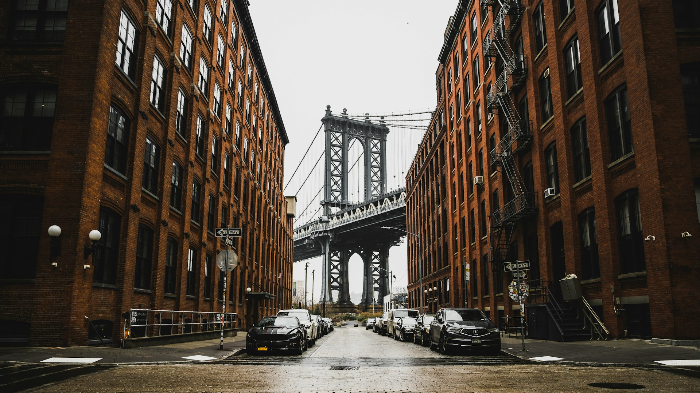
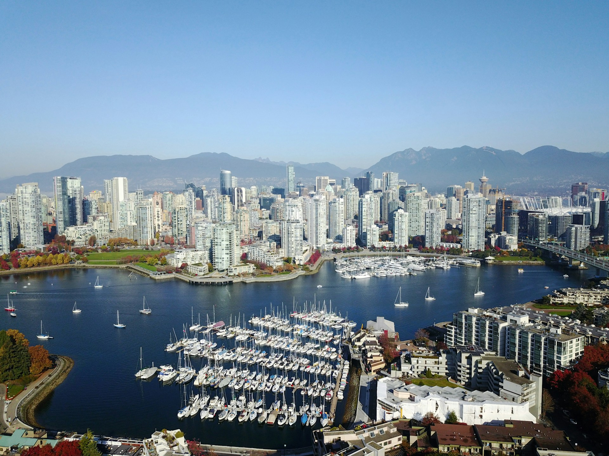

NorthAmerica
이번 휴가는 여기로! 북미지역 추천 여행지 페이지입니다미동부
미서부
캐나다
알래스카
뉴욕 - 센트럴 파크, 월 스트리트, 엠파이어 스테이트 빌딩, 브로드웨이, 브루클린 브릿지

워싱턴 - 링컨 기념관,백악관, 국회의사당, 스미소니언 역사박물관
보스톤 - 펜웨이 파크, 프리덤 트레일, 보스톤 미술관, 뉴잉글랜드 수족관
필라델피아 - 프랭클린 연구소, 필라델피아 미술관, 자유의 종, 독립기념관
로스앤젤레스, 라스베가스 - 산타모니카 부두, 유니버셜 스튜디오 할리우드, 그리피스 천문대, 레드락 캐년, 벨라지오 분수
샌프란시스코 - 금문교, 피어39, 골든 게이트 공원, 유니온 스퀘어
시애틀 - 팝아트 뮤지엄, 유니버시티 디스트릭트,다운타운
밴쿠버, 빅토리아 - 스탠리 파크, 그랜빌 아일랜드, 캐필라노 현수교, 로열 BC 박물관, 빅토리아 이너 하버

토론토, 나이아가라 - CN타워, 나이아가라폭포, 로저스 센터, 토론토 동물원
캘거리 - 캘거리 타워, 프린시즈 아일랜드 공원, 헤리티지 파크,와일더 인스티투테
퀘백, 몬트리올 - 생루이 게이트, 뒤프랭 테라스, 샤토 프롱트나크 호텔, 주의회 의사당, 노트르담 대성당, 몽루아얄 공원
앵커리지 - 토니 놀즈 해안 트레일, 알래스카 식물원, 추가치 주립공원
페어뱅크스 - 체나 온천, 알래스카대학교 페어뱅크스 캠퍼스, 크리머스 필드